Excel Add-In
Excel 是一款功能强大的电子表格软件，它支持数据的录入、存储、计算与分析。用户可以利用其内置的丰富函数进行数据处理，并通过图表直观展示数据趋势。此外，Excel 还具备数据排序、筛选、透视表等高级功能，可以帮助用户高效分析数据。
然而在应对庞大数据量及深度数据挖掘时，Excel的管理能力与诸多性能却稍显不足。针对此类情况，DolphinDB 以专属 Excel Add-In 为桥梁，为用户提供了“Excel + DolphinDB”的强大集成方案。凭借该方案，用户能够在熟悉的 Excel 环境中，便捷地运用 DolphinDB 的强大计算与分析能力，结合 Excel 本身的诸多功能，更灵活、更高效地实现数据的复杂处理、深度分析与直观可视化，从而应对复杂多变的海量数据挑战。
下图展示了 DolphinDB Excel Add-In 的使用界面。从左到右的图标分别表示连接配置、连接节点选择、SQL 查询面板、插件功能配置。
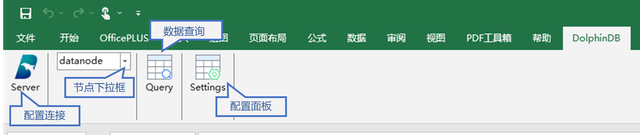安装说明
用户可以在微软 Excel 的 Add-In 加载项中添加该插件。具体安装步骤如下：
（1）根据当前使用的 Excel 版本，下载安装包（地址：https://github.com/dolphindb/excel-add-in/releases），安装包内包含 DolphinDBExcel-AddIn-packed.xll（Windows 32位）或者 DolphinDBExcel-AddIn64-packed.xll（Window 64位）。
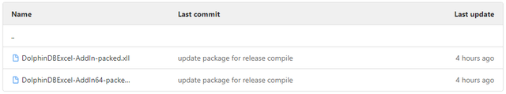注意：Excel 的 32/64 位版本信息可以在 Excel 的“文件”->“账户”->“关于Excel”里找到。
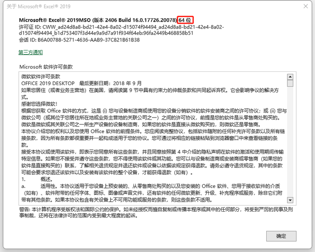（2）在 Excel 中依次单击“文件”->”选项“->”加载项”。
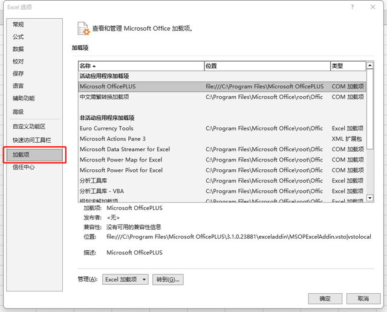（3）在”管理”栏中选择“Excel 加载项”，然后单击“转到”。
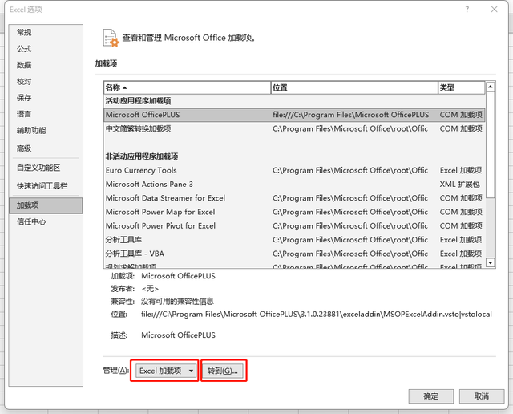（4）单击”浏览”。在安装路径中找到 DolphinDBExcel-AddIn64-packed.xll 文件（32 位的 Office 需要选择DolphinDBExcel-AddIn-packed.xll 文件）。
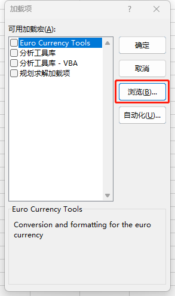 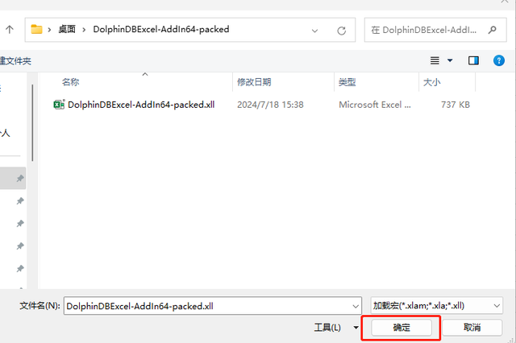（5）系统自动返回加载项界面，选中刚刚导入的“DolphinDBExcel Add-In”。
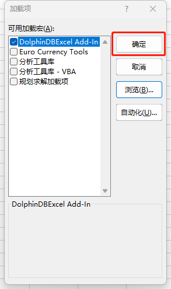（6）成功安装后，会在 Excel 的主菜单栏看到 “DolphinDB” 菜单栏。
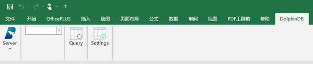（7）更新插件时，在 Excel 中依次单击“文件”->”选项“->”加载项”->”转到”，取消勾选原加载项，点击确定，并关闭选项框。
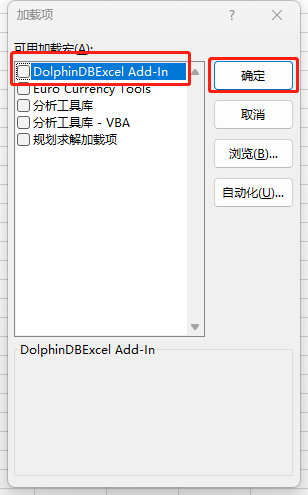再次打开该选项框，按安装步骤，选择新的加载项。
配置说明
本节讲解如何配置 DolphinDB server 连接和其他事项。
配置连接
单击“Server”，可以添加新的连接节点、或者修改已配置节点的连接信息。
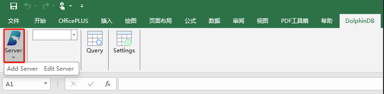添加新节点
单击“Add Server”以添加新节点。
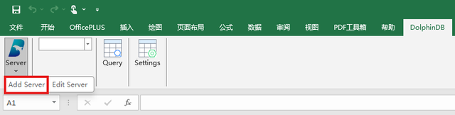在页面中需要输入 Name（标识名）、Host（节点信息）、Port（端口信息）、User Name（用户名）和 Password（密码）。
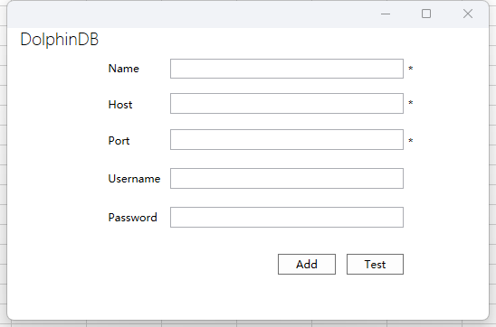参数说明：
- Name 字符串，表示标识名，必填参数。
- Host 字符串，表示节点信息，必填参数。
- Port 整型，表示端口信息，必填参数。
- User Name 字符串，表示账号用户名。
- Password 字符串，表示账号密码。
确认上述信息无误后，点击“Add”确认添加。此外，也可先点击“Test”以测试是否与目标节点连接成功。
完成添加后，新节点会自动出现在切换节点的下拉菜单中。
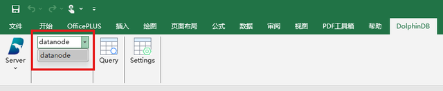修改节点信息
单击“Edit Server”以修改已配置的节点信息。
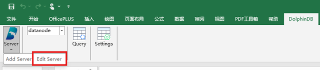 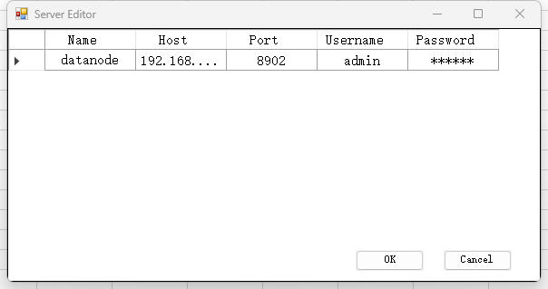单击想要修改的信息，进行对应修改。修改后单击右下角的“OK”以保存。若要取消修改，则单击右下角的“Cancle”。
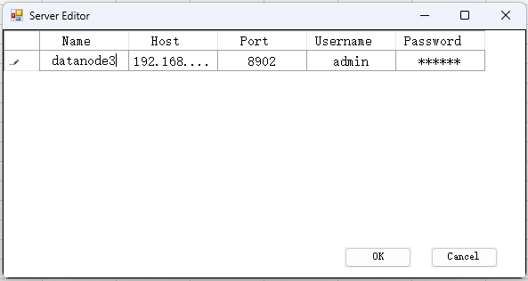单击想要删除节点所在行的第一列，可以看到该行被选中，单击“Delete”键，将会看到该行节点信息被删除。点击“OK”已保存修改。
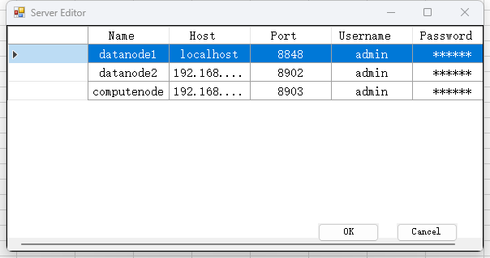配置面板
单击“Settings”以打开配置面板。
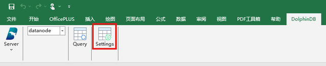在该面板中，可以设置 SQL 查询面板的字体类型、字体大小，以及导出数据的最大行数限制。
同时可以看到，该面板中会显示当前 DolphinDB Excel Add-In 的版本信息。图 2-11 中显示信息为“Version: V1.0.0 2024.07.19”。
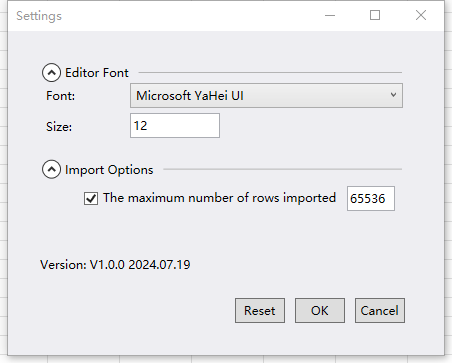配置项说明：
Editor Font：
- Font 表示 SQL 面板中的字体类型。选择下拉框中的类型。
- Size 正整数，表示 SQL 面板中的字体大小。
Import Options:
- The maximum number of rows imported 如果勾选了该功能，则会限定每次导入 Excel 数据的行数。并且可在末尾的框中输入具体的行数上限。
确认修改后，点击“OK”以确认。
若要取消修改，可点击“Cancel”。
若要恢复默认配置，请点击“Reset”。
使用说明
用户可在 Excel 中进行切换节点、数据查询、数据订阅和调用 DolphinDB 函数等操作。
切换节点
单击节点下拉框以切换节点。
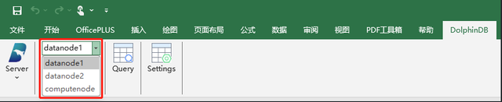数据查询
有 2 种将数据导入到 Excel 表格的方法。操作如下，先单击“Query”，进入查询面板。
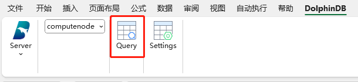查询面板主要由菜单栏、项目导航栏、脚本编辑器和日志浏览器组成。其中菜单栏以图标的形式展示，鼠标放置时会弹出文本解释，从左到右依次为“Refresh”“Expand/Collapse”“Excute”“Excute & Import”。
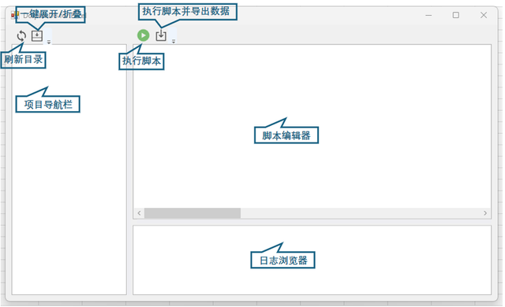方法一：直接导入
如果需要把某一个表的数据直接导入到 Excel 中，可进行如下操作。
（1）在 Excel 表格中选定需要导入数据的位置。

（2）在变量列中右键单击对应的变量。
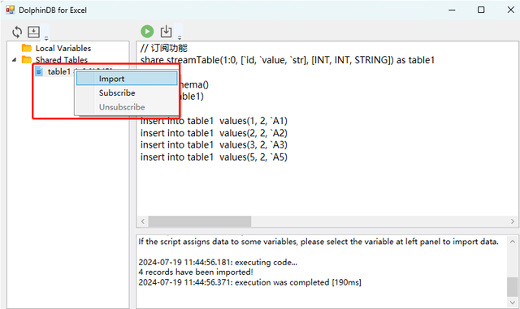（3）选择“Import”。
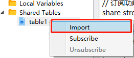（4）成功导入数据。
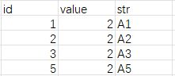方法二：使用 SQL 语句导入
支持将一个查询语句的返回值直接导入到 Excel 表格中。操作示例如下：
（1）在 Excel 表格中选定需要导入数据的位置。
（2）编写需要运行的脚本。
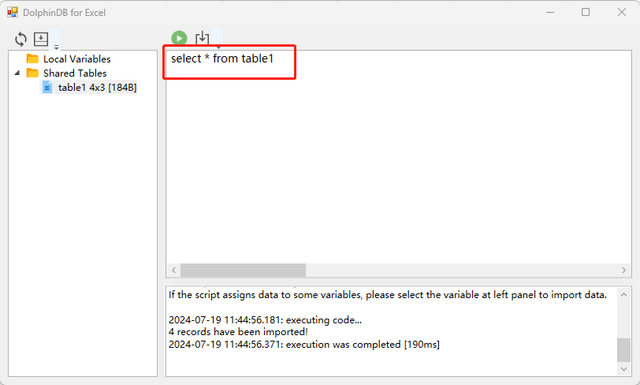（3）点击“Execute & Import”。
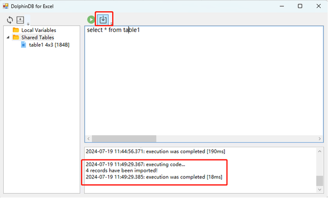（4）成功导入数据。
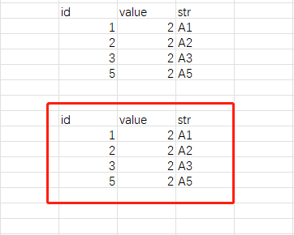数据订阅
支持订阅 DolphinDB 中流表的数据。操作示例如下：
（1）在 Excel 表格中选定需要导入数据的位置。
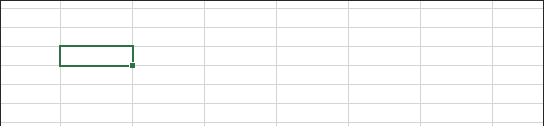（2）在变量列中右键单击对应的变量。
（3）选择“Subscribe”。
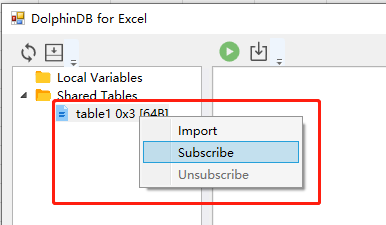（4）指定刷新主键。每当有新的数据进来时，主键相同的数据则会刷新，主键不存在时则会添加一行数据。此处输入“id”。
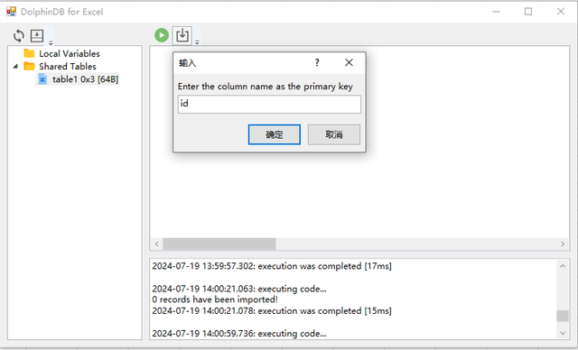（5）如果所连 server 的版本小于或等于 200.8，则需要填入客户端的流订阅端口。
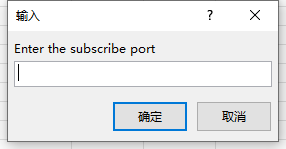（6）订阅成功后会显示表结构。
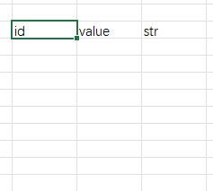（7）当订阅的流表有新增数据时，会在表格里刷新数据。
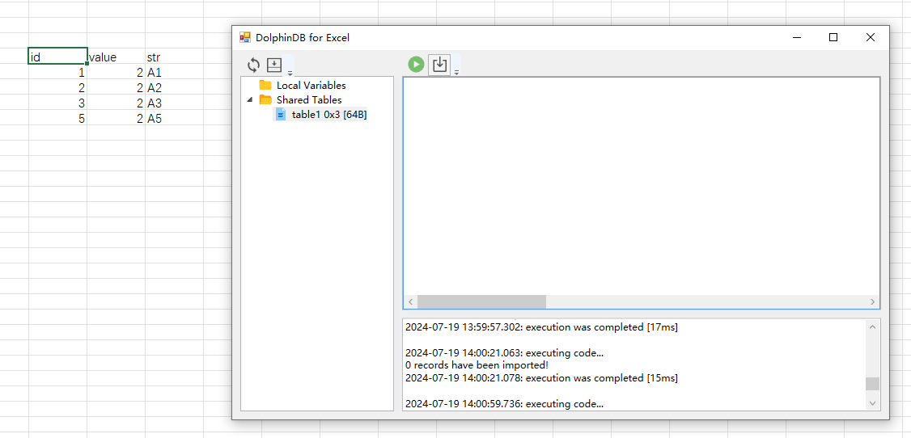（8）点击“Unsubscribe”以关闭数据订阅。
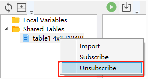函数调用
支持在 Excel 中调用 DolphinDB 的函数。主要通过 RUNFUNCTION(values1,
values2,...) 实现。该函数能够在 Excel 表格中远程执行 DolphinDB
上的函数或函数视图，并且可以填入参数，执行结果会返回到 Excel 指定的表格中。
参数介绍：
在 Excel 中，RUNFUNCTION 的参数为 values1, values2,…… 其中，
- values1 必填参数，表示 functionName，即 DolphinDB server 中的函数。函数可参考 DolphinDB 函数文档说明。
- values2,…… 表示被调用函数对应的参数。其数量没有限制，可以是 0。
=RUNFUNCTION("funcTest", 2)，这时会在 DolphinDB 中执行
funcTest(2.0$DOUBLE)。使用示例：
在 DolphinDB 数据库中有 getTableData 这一函数视图。
def getTableData(dataType){
if(dataType == "type1"){
return table(1..10 as id, 1..10 as value)
}else{
return table(1..10 as id, 11..20 as value)
}
}
addFunctionView(getTableData)在 Excel 中选择一块表格区域，然后调用函数 =RUNFUNCTION("getTableData",
"type1")，最后按下回车键以执行函数。如下为示例截图。